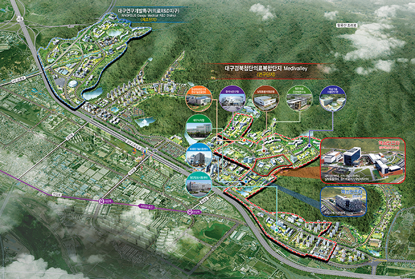
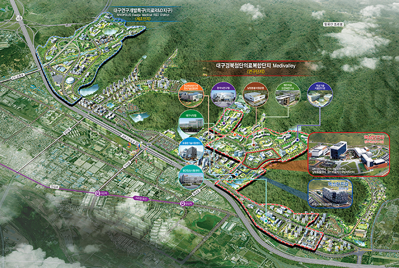
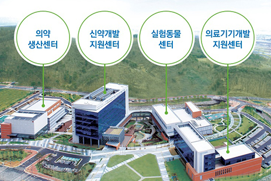

의료산업
- Home
- 주요산업
- 의료산업
첨단의료복합단지 조성
 

단지 인프라 구축
- 위치ㆍ규모 : 동구 신서동 혁신도시내 1,030천㎡
- 주요시설 : 신약개발지원센터, 의료기기개발지원센터, 실험동물센터, 임상시험신약생산센터 등
- 사업기간 : ’09~’38년(단지조성 ’10~’13년)
- 총사업비 : 4.6조원(국비 1.1, 지방비 0.9, 민자 2.6)
단지내 정부 핵심인프라 및 연구지원시설 건립(’10~’13, 2,649억원)
- 부지 70,100㎡, 설계(’10.2˜’11.5월), 공사(’11.10˜’13.11월)
- 신약ㆍ첨단의료기기개발지원센터, 실험동물ㆍ임상시험신약생산센터, 공용시설
연구개발 시너지효과 창출을 위한 커뮤니케이션센터 건립(’10~’13, 342억원)
- 부지 10,112㎡(지하1, 지상8), 설계(’10.7˜’11.6월), 공사(’11.10˜’13.4월)
단지 인프라 구축을 위한 부지 매입ㆍ지원(’10~’15, 572억원)
- 부지매입(정부ㆍ지자체시설, 80천㎡), 매입지원(민간입주구역, 395천㎡)
- 공급가 확정 및 민간입주구역 지원계획 수립(’11.12˜’12.6월)
단지 운영 시스템 구축
- 본격적인 R&D 활동을 위한 외부 연구시설 확보 및 우수 연구인력 채용(’12년 24명 예정)
- 센터별 중장기 사업계획, 인력ㆍ장비수급계획 등
- 연구개발 분야별 R&D 기획, 단지 브랜드 개발 및 차별화된 마케팅전략 수립
단지 지원시스템 구축
-
단지 조기활성화 지원을 위한 메디시티기금 조성(’11~’20, 500억원)
- 재원 : 대구시 조성목표액의 90%(450억원) 출연, 민간 10%(50억원) 출연
- 메디시티기금 운용심의위원회 구성ㆍ운영(15명 이내, ’12년 상반기 구성)
-
벤처기업 지원을 위한 의료산업육성펀드 조성추진
- 1차 펀드조성 예상 규모 : 160억원(정부80, 시10, 민자70)
-
국내ㆍ외 의료클러스터, 단지내ㆍ외 연구개발기관 협력체계 구축
- 대학ㆍ기관ㆍ기업, 단지내 연구개발기관과의 협의체 구성
- 국내ㆍ외 의료클러스터와 네트워크(기업ㆍ기관 협력, 인력교류 등) 구축
기업ㆍ기관유치 추진
-
단지의 글로벌화를 위한 핵심기업ㆍ연구기관 유치
- 기존 MOU 체결 기업(14개) 후속조치(입주협의, 계약체결 등)
- 앵커기업, 글로벌기업 투자유치 및 유망벤처기업 창업지원 등
- 국책연구기관, 해외연구소, 정부 신설연구센터의 단지내 유치 추진
첨단의료기기산업 육성
의료기기산업 기반구축
-
IT융복합 의료기기산업 육성을 위해 유망상품(영상진단, 전동휠체어 등) 개발 및 지원센터를 통한 비즈니스 지원(’09˜’12, 613억원)
- 계속과제(R&D 18개, 기업지원 2개) 지원, 신규과제 선정(’12.6˜7월)
-
서구 체형에 맞는 치과보철물 가공수출, 소재개발을 위한 덴탈소재 및 치과기공 클러스터 활성화(’10˜’12, 107억원)
- 수출지원 사업화 시스템 구축, 전문기술인력 양산 및 맞춤형 임상교육 등
-
의료기기 임상시험 기술수준 향상 및 활성화를 위해 의료기기 임상시험센터 구축(’08˜’12, 105억원)
- 임상시험 인프라 구축, 의료기기 임상시험 및 관련전문가 교육 등
IT기반 헬스케어산업 육성
-
u-헬스분야 글로벌시장 진출을 위해 IT-헬스산업 육성사업1)(’09~’12, 18억원) 및 스마트케어 서비스 시범사업2)(’10~’12, 152억원) 추진
- 주 1) u-헬스제품 국제공동개발(뉴질랜드), 테스트베드 및 네트워크 구축
- 주 2) 만성질환자 원격영상진료 및 운동ㆍ투약 등 관리시스템 구축
-
고령친화제품의 이해도 증진 및 산업화를 위해 시니어체험관 구축 및 운영(’10~’15, 16억원)
- 시니어체험 프로그램 및 문화센터, 고령친화제품 사용성 평가실 운영 등
지역특화 의료브랜드 육성

특화의료센터 운영
-
만성ㆍ난치성 질환에 대해 양ㆍ한방, 보완대체의료를 적용한 치료시스템 구축을 위해 통합의료센터 건립 및 연구개발 추진(’09~’12, 316억원)
- 공사 착공(’11.7월), 센터 준공(’12년)
-
조직재생 분야를 지역특화 의료기술로 개발하기 위해 국제재생의학연구소 운영 및 특화기술개발 지원(’09˜’13, 49억원)
- 美 웨이크포리스트대학과 공동임상연구, 양수줄기세포를 이용한 근조직 재생 등
분야별 의료기술개발 활성화
-
Medi-City로서 수준 높은 의료기술 확보를 위해 전문분야별 의료R&D센터의 의료기술개발 및 사업화 지원(’12년 63.9억원)
분야별 의료기술개발 표로 센터명, 연구분야, ’12사업비 (시비) 정보제공 센터명 연구분야 ’12사업비 (시비) 말기신부전임상연구센터 신부전환자 임상시험 및 표준지침 개발 9.0억원(0.5) 첨단진단예측의료기술클러스터 질병 특이정보 발굴 및 진단기술 개발 27.7억원(5.0) 인체유래생물자원지역거점은행 인체ㆍ병원체 자원 수집 및 분양 10.4억원(1.0) 두개안면기능장애연구센터 두개안면 장애 제어기술 및 치료법 개발 10.7억원(1.0) 암정복연구센터 폐암 치료기술 개발 6.1억원(1.0) -
R&D를 통해 개발된 기술의 상용화를 위한 암진단 핵심기술 상용화 기술개발(’11~’15, 135억원)
- 암진단 상용화 기술개발, 임상검증 및 평가, 마케팅 지원 등
의료관광 활성화
-
지역의 의료관광 인프라를 활용하여 외국인 의료관광객 유치활동 강화(’12년 1만명, 14억원)
- 원스톱 지원체계 구축(종합정보센터 운영)
- 성형, 명품한방 등 치료ㆍ체험관광 연계상품 개발 및 활성화, 의료관광 서포터즈(통역) 양성
- 선도의료기관 지정 및 마케팅 지원
- 러시아·베트남 등 신흥 의료관광 수요 국가 대상 선제적 마케팅 및 市 자매·우호도시 연계 마케팅
- 세계 최고의 모낭군 이식술을 지역대표 의료관광상품으로 육성하기 위해 의료관광 모발이식 전용센터 역량 강화(민자 30억원)
바이오 · 한방산업 기반 강화
바이오산업 기반강화
-
【전략산업진흥】바이오헬스융합센터 중심으로 육성기반 정비,기술지원 등 바이오기업 경쟁력 강화(’09˜’12, 85.7억원)
- 건강기능소재 육성기반사업, 생물산업 기술지원사업, 전문인력 양성사업 등
- 만성질환 예방기술을 개발하는 식품영양유전체연구센터(’08~’15, 76억원), 로컬푸드와 의료서비스를 접목하여 힐링식품ㆍ식단산업을 육성하는 힐링용 로컬푸드 활성화(’10˜’12, 30.8억원)
- 석유의존도 및 이산화탄소 순배출 감소를 위한 그린카본 기반 바이오화학산업 육성(‘13˜’17, 3,185억원)으로 국가경쟁력 강화 및 지역경제 활성화
한방산업 활성화
-
신약(천연물ㆍ합성신약) 후보 발굴을 위한 천연물 물질은행 구축(’11˜’14, 64억원)
- 천연물질 분리ㆍ정제 및 제공을 위한 협력체계 구축, 천연물질 종합정보 구축 등
-
한방의 과학화 및 한방신약개발을 위한한방생명자원연구센터지원(’03˜’12, 122억원)
- 장비구축 및 활용, 연구개발 및 인력양성, 개발기술 사업화, 기술이전ㆍ지도
- 방제과학 글로벌 연구센터(‘11~’18, 104억원), 한약제제의 품질 제고 및 안정적 공급을 위한 한약제제 제형 현대화(‘12˜’16년, 80억원) 추진
- 한방제품 개발 및 한방제품의 신뢰성 확보, 한의치료기술개발, 한약재 생산기반 강화를 위하여 한방산업지원센터(’09˜’12, 18억원), 대구경북한방산업진흥원(‘12˜’16, 100억원) 운영
-
한국한의학연구원 한의기술응용센터 건립(‘11˜13, 236억원), 해외 한약재 개발사업(’12, 5억원) 추진
- 한의예방ㆍ치료기술 및 융ㆍ복합 한의기술 실용화 등 특화기술 개발 허브구축
- 러시아(로스토프) 한약재 개발단지 조성, 한약재 수입ㆍ가공 및 유통망 구축, 기능성 물질 및 천연물신약 개발 등